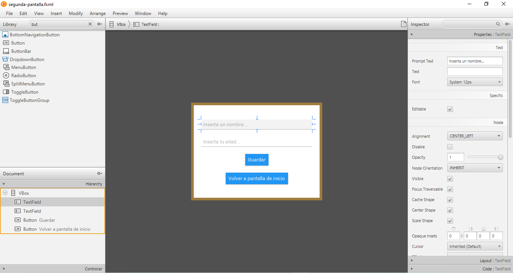
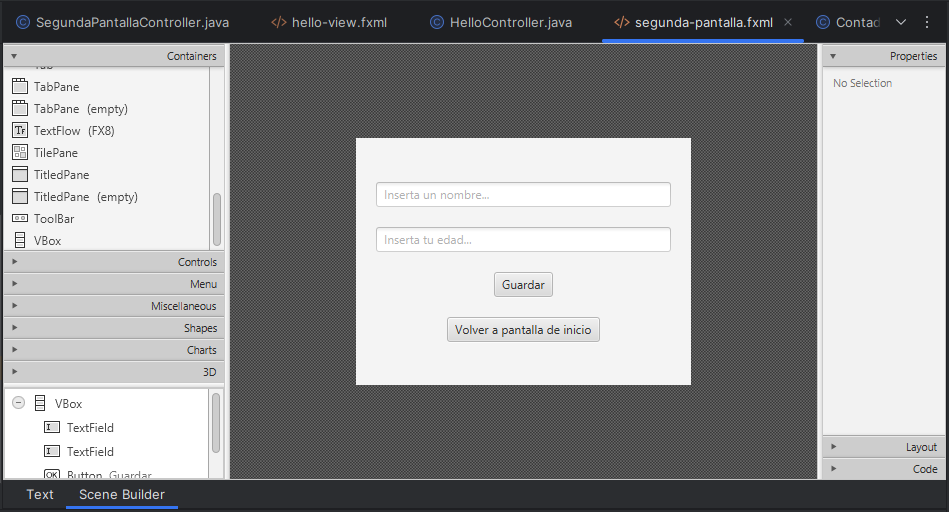
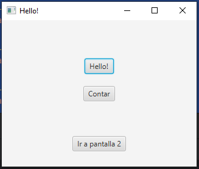
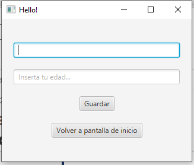
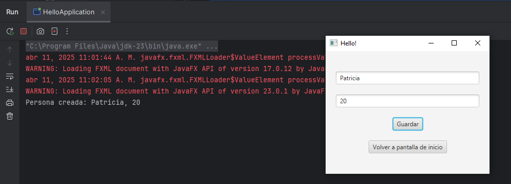
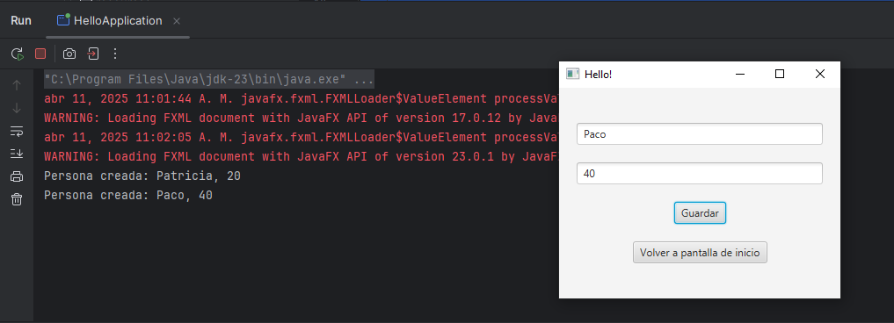
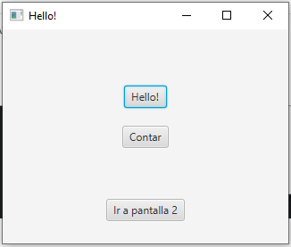
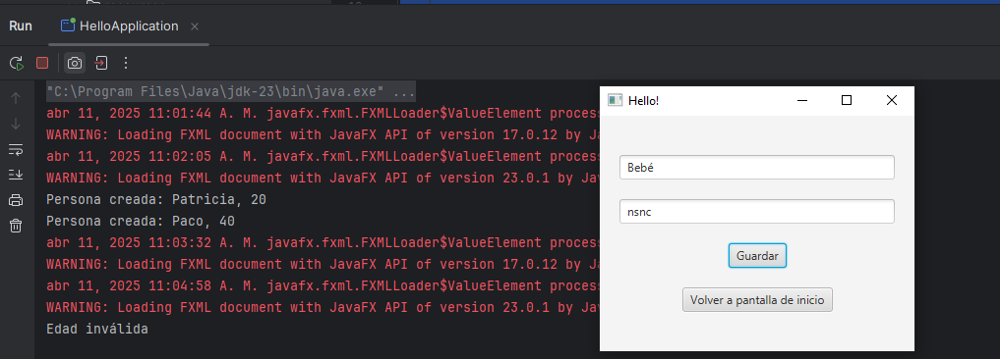
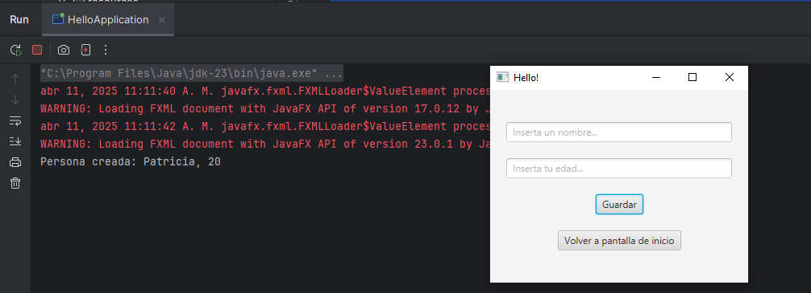

En JavaFX, para guardar los valores de un TextField (o cualquier otro componente de entrada de datos) como atributos de un objeto, simplemente tenemos que obtener el texto del TextField y pasarlo al objeto correspondiente.
Empezaremos insertando en nuestra segunda pantalla dos TextFields, que servirán para guardar el nombre y la edad de una Persona:

Además, insertaremos un botón "Guardar".
Volvemos a IntelliJ...

Primero retocamos el fxml para asignar a cada TextField un id y asignar una acción al botón de Guardar:
<?xml version="1.0" encoding="UTF-8"?>
<?import javafx.geometry.Insets?>
<?import javafx.scene.control.Button?>
<?import javafx.scene.control.TextField?>
<?import javafx.scene.layout.VBox?>
<VBox alignment="CENTER" prefHeight="247.0" prefWidth="335.0" spacing="20.0" xmlns="http://javafx.com/javafx/23.0.1" xmlns:fx="http://javafx.com/fxml/1" fx:controller="org.example.demo.SegundaPantallaController">
<padding>
<Insets bottom="20.0" left="20.0" right="20.0" top="20.0" />
</padding>
<TextField fx:id="nombreTextField" promptText="Inserta un nombre..." />
<TextField fx:id="edadTextField" promptText="Inserta tu edad..." />
<Button text="Guardar" onAction="#guardarPersona"/>
<Button onAction="#irAPantallaHello" text="Volver a pantalla de inicio" textAlignment="CENTER" />
</VBox>
A continuación, creamos nuestra clase Persona que será manipulada por el controlador:
package org.example.demo;
public class Persona {
private String nombre;
private int edad;
public Persona(String nombre, int edad) {
this.nombre = nombre;
this.edad = edad;
}
public String getNombre() {
return nombre;
}
public int getEdad() {
return edad;
}
}
Y ahora sí que sí, nos dirigimos al controlador que usará la propiedad .getText() para guardarse lo que tengamos escrito en cada TextField, y creará una nueva Persona con esos valores de atributos nombre y edad:
package org.example.demo;
import javafx.fxml.FXML;
import javafx.scene.control.TextField;
import java.io.IOException;
public class SegundaPantallaController {
@FXML
private TextField nombreTextField;
@FXML
private TextField edadTextField;
@FXML
private void guardarPersona() {
String nombre = nombreTextField.getText();
int edad;
try {
edad = Integer.parseInt(edadTextField.getText());
} catch (NumberFormatException e) {
System.out.println("Edad inválida");
return;
}
Persona persona = new Persona(nombre, edad);
System.out.println("Persona creada: " + persona.getNombre() + ", " + persona.getEdad());
}
@FXML
public void irAPantallaHello() throws IOException {
HelloApplication.setRoot("hello-view");
}
}
Para confirmar que hemos guardado a la persona, imprimiremos en la consola un mensaje.
Lo probamos:
 




Para hacer la app un poco más curiosa, insertaremos dos .clear() para cadaTextField destinados a borrar el contenido que tuvieran estos cada vez que guardamos exitosamente a la persona:
package org.example.demo;
import javafx.fxml.FXML;
import javafx.scene.control.TextField;
import java.io.IOException;
public class SegundaPantallaController {
@FXML
private TextField nombreTextField;
@FXML
private TextField edadTextField;
@FXML
private void guardarPersona() {
String nombre = nombreTextField.getText();
int edad;
try {
edad = Integer.parseInt(edadTextField.getText());
} catch (NumberFormatException e) {
System.out.println("Edad inválida");
return;
}
Persona persona = new Persona(nombre, edad);
System.out.println("Persona creada: " + persona.getNombre() + ", " + persona.getEdad());
nombreTextField.clear();
edadTextField.clear();
}
@FXML
public void irAPantallaHello() throws IOException {
HelloApplication.setRoot("hello-view");
}
}
